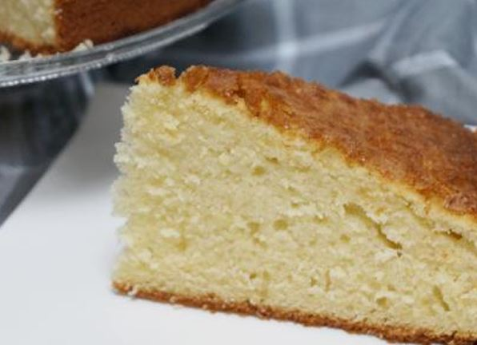
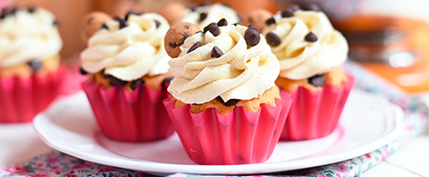
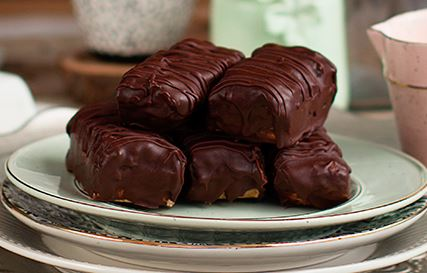
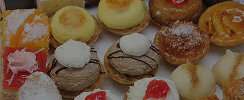
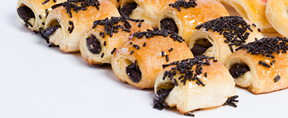
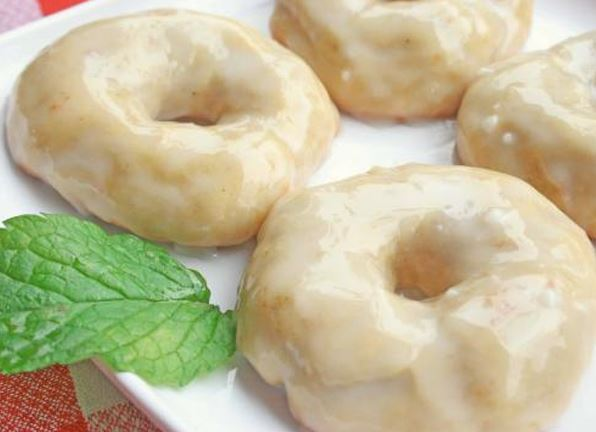

Galletas napolitanas caserasEl olor a galletas horneadas siempre nos evoca recuerdos de la infancia, además otorga una calidez especial a la cocina y al hogar en general. No podrás parar de comerlas. |

Bizcocho de la abuelaEs uno de esos bizcochos de toda la vida, de los que preparaban nuestras abuelas y nos transportan automática a nuestra infancia, con su esponjosidad y agradable sabor. |

Brownie con nuecesEl brownie es un bizcocho, típico de la cocina americana, que no lleva levadura ni bicarbonato, por lo que queda compacto, denso y cremoso a la vez. Respetamos la receta original y por tanto no lleva nada de levadura pues el brownie surgió de un error de un chef que olvidó añadir levadura a un bizcocho. |

Cupcakes de zanahoriaUn cupcake, también conocido como patty cake o fairy cake, es una pequeña tarta individual que se cocina frecuentemente en moldes similares a los empleados para hacer muffins o magdalenas. Disfruta de su refrescante sabor a zanahoria. Es un postre veggie. |

Chocolatinas Snickers saludablesEsto es una verdadera perdición, los Snickers Saludables son para morir y resucitar! y lo mejor... ¡son sin nada de azúcar, todo lo que lleva es super saludable! me encantan y a mis niños más! ¡Para los amantes del chocolate! |

Pastelitos de nataSon tartaletas de crema, elaboradas según una receta secreta que no ha sido desvelada en casi doscientos años y que, supuestamente, solo siete personas conocen en el planeta. Es una de las especialidades más características de la cocina portuguesa. |

Napolitanas de chocolateSe trata de un bollo hecho de una capa delgada de masa de hojaldre cortada en forma rectangular y un relleno de crema pastelera, la misma masa que los croissants. |

Rosquillas de anís al horno¡Aromáticas, sabrosas y más ligeras! Comerlas es adictivo, con ese toque dulce del anís ¡nos las quitan de las manos! Según salen del horno, nos quedamos sin existencias. ¡Palabrita! |